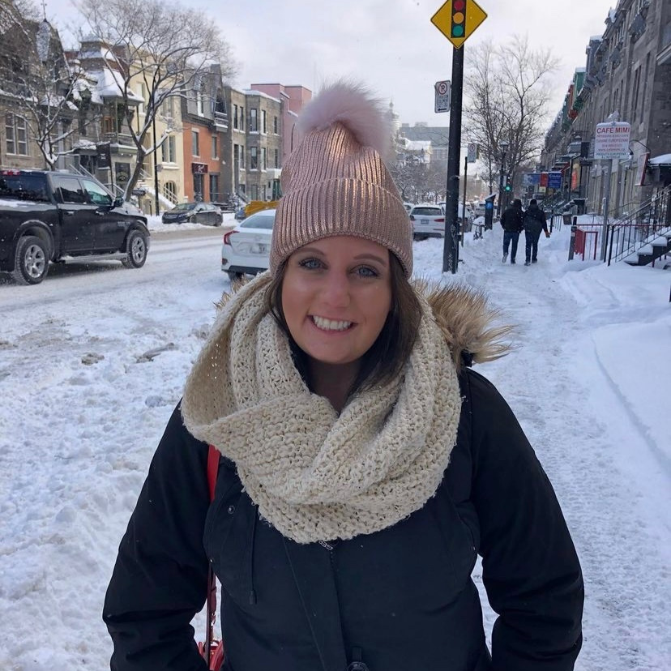
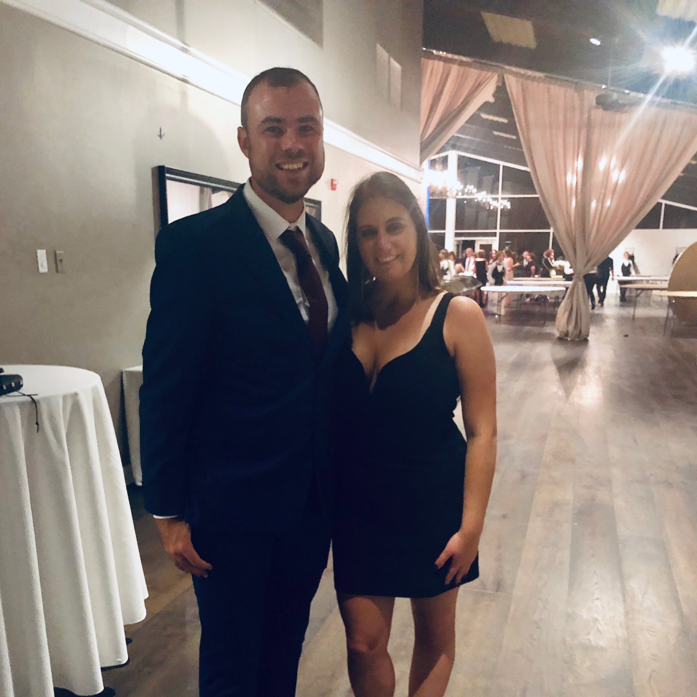

Realizing what's really important
Kacey Quenzer, a 27-year-old buyer for a
national power company, felt isolated
quickly into quarantine. “I’m a social
person, but I was also going through a
breakup right when it hit, so that made it
harder,” she recalls.
Even more, Quenzer had just moved into her
own apartment – an accomplishment she
celebrated, but also one that left her even
more alone.
She turned to dating apps, particularly
Hinge, to find distraction from her breakup
and to escape from the walls of her
one-bedroom in South Boston.
Unfortunately, she found it hard to make
genuine connections on the app. Her
surface-level or one-off interactions on the
app made her “treasure the genuine
connections” she’d already found in her
life, “I’ve realized what matters more,” she
stated.
What mattered most, she now understood, was
her previous relationship. Quenzer and her
ex-boyfriend, who lives in England, began
communicating again. “We talked on and off
throughout quarantine, but I was guarded
because I was so hurt by what we went
through before.”
In February of 2021, nearly a year into the
pandemic, Quenzer had an epiphany. “I called
him and told him I was all in.”


Quenzer (left), Quenzer and her
ex-boyfriend (right)
Quenzer notes that quarantine gave her and
her ex-boyfriend both the time they needed
to really think about what they wanted and
to be intentional about moving forward. “We
both needed to do some work alone to make
this work as a couple. I’m not sure we
would’ve gotten there if life had kept on as
normal.”
In May, Quenzer will fly to England to
reunite with him. They have a schedule of
visits mapped out for the rest of the year.
From there, they’ll figure the rest out,
together.
The pandemic has challenged long held
notions of our relationships and how we
connect. It has highlighted the issues born
when self-esteem and self-validation are
rooted in confirmation from others. And
perhaps, for some, exposed the anxieties of
being alone after having been alone for so
long.
“I think that people seek that kind of
closeness, a direct love relationship, that
grows out of an ongoing feeling of
isolation. The wish to be with someone. To
know you are with someone...They wish for
that oneness because there's a kind of
paranoia of being alone. That oneness is
about fighting that paranoia. About fighting
the fear that one is left without,” said Dr.
Chavis.
Whatever the “new normal” may look like for
relationships after the pandemic, it’s clear
that things will change. We will have to
make new bridges where others have been
eroded or forgotten. Further still, we will
have to consider the means by which we make
and maintain those bridges.